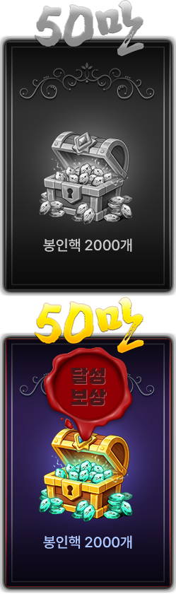
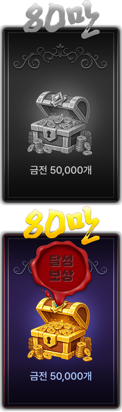
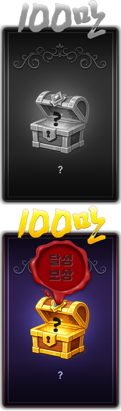
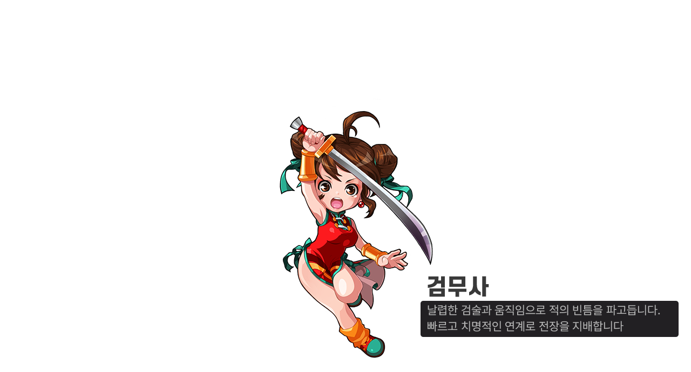

귀혼키우기 출시일 11월 중순 예정, 출시 시점 PvP 미반영이랑 사전예약 현황까지
지난번에 귀혼키우기 사전예약 총정리 글을 올렸을 때만 해도 출시일 칸에는 '아직 미공개'라고 적어 둘 수밖에 없었는데요, 8월 실적 보도에 '하반기 중'이라는 큰 틀은 있었어도 '11월'이라는 월 단위 시기와 '중순'이라는 표현은 10월 13일 인터뷰 기사에서 나왔더라고요. 기사를 찬찬히 읽어 보니 시기만 나온 게 아니라 PvP가 출시 때 들어가지 않는다는 이야기까지 같이 나왔어요.
귀혼키우기는 엠게임이 서비스하는 모바일 무협 방치형 RPG입니다. 이번 글에서는 출시 시기와 PvP 미반영, 그리고 사전예약이 그사이 어디까지 왔는지를 한 번에 묶어 봤어요.
귀혼키우기 공식 로고예요.
이미지 출처: 귀혼키우기 공식 사전예약 페이지 · 네이버 본문엔 받아서 재업로드 권장
귀혼키우기 출시일은 언제로 나온 걸까요
귀혼키우기의 출시 시기는 11월 중순 예정이고, 정확한 날짜는 아직 공개되지 않았습니다. 이 시기는 게임메카가 10월 13일에 실은 개발진 인터뷰에서 나온 말이라 공식 확정 공지와는 결이 달라요. 인벤·게임톡·베타뉴스 같은 다른 매체들은 '11월 출시'나 '11월 중' 정도로만 적고 있어서, '중순'이라는 시기는 게임메카 보도를 기준으로 보시는 게 맞습니다.
8월 14일 실적 보도에는 '하반기 중 국내 출시'라는 큰 틀만 있었고, 8월 19일 MTN 보도 때는 출시일이 미정이었어요. 당초 2025년 3분기를 목표로 하다가 완성도를 이유로 일정이 뒤로 밀렸다는 설명도 같이 실렸죠. 그러니까 하반기 중이라는 큰 틀이 두 달쯤 사이에 '11월 중순 예정'까지 좁혀진 셈이에요. 사전예약을 시작한 뒤 지금까지의 흐름을 한 장으로 모으면 이렇게 돼요.
| 날짜 | 있었던 일 | 근거 |
|---|---|---|
| 8월 11일 | 사전예약 시작 | 경향게임스·뉴스핌 보도 |
| 8월 14일 | 실적 보도에 '하반기 중 국내 출시 예정' 표기 | 이코노미스트 보도 |
| 8월 19일 | 신청자 50만 명 돌파(시작 9일 만), 출시일은 미정 | MTN 보도 |
| 9월 4일 | 신청자 80만 명 돌파 발표 | 경향게임스 보도 |
| 10월 13일 | 11월 중순 출시 예정 언급(인터뷰 발언) | 게임메카 인터뷰 보도 |
이름이 비슷한 귀혼M은 별개의 게임이니 헷갈리지 않으셔야 합니다.
PvP는 출시 때 들어가지 않는다는데 어떻게 되는 걸까요
PvP는 출시 시점에는 들어가지 않고, 출시 이후 업데이트로 추가될 계획이에요. 출시 초반에는 캐릭터를 키우고 랭킹을 겨루는 개인 성장 중심으로 굴러가고, 랭킹 콘텐츠도 한꺼번에 열리기보다 점차 업데이트로 늘려 간다고 해요. PvP는 아직 개발 단계이고, 계획은 크게 두 갈래로 나와 있습니다. 두 갈래를 출시 시점과 나란히 놓으면 차이가 한눈에 보이니, 표로 묶어 봤어요.
| 구분 | 출시 시점 | 출시 이후 계획 |
|---|---|---|
| 중심 콘텐츠 | 개인 성장과 랭킹 | PvP와 문파대전 추가 |
| PvP | 미반영 | 키운 캐릭터로 다른 유저와 겨루는 방식 |
| 문파대전 | 미반영 | 문파원 30명씩 일주일가량 진행한 뒤 30 대 30으로 맞붙는 방식, 각자 가능한 시간에 참여 |
| 도입 시점 | 해당 없음 | 아직 확정되지 않음 |
그래서 PvP를 보고 귀혼키우기를 기다리신 분이라면 출시 첫날부터 겨루는 재미를 바라기보다는, 방치 성장을 먼저 즐기는 쪽으로 마음을 잡아 두시는 게 좋겠네요. 도입 시기는 업데이트로 빠르게 넣겠다는 정도의 표현만 나온 상태라 몇 월이라고 말하기는 이르답니다~
사전예약 인원은 지금 어디까지 왔을까요
사전예약 신청자는 9월 4일 기사 기준으로 80만 명을 넘었고, 그 뒤의 공식 수치는 아직 나오지 않았습니다. 10월 13일 인벤 인터뷰 기사도 80만 돌파를 언급하면서 순항 중이라고 전하고 있어요. 목표 달성 보상은 인원이 늘 때마다 신청자 전원에게 나눠 주는 구조인데요, 공개된 단계는 이렇게 돼 있었어요.
- 30만 명 단계는 홍수정 3,000개입니다.
- 50만 명 단계는 봉인핵 2,000개예요.
- 80만 명 단계는 금전 50,000개입니다.

50만 명 달성 보상 화면이에요. 봉인핵 2,000개가 적혀 있어요.
이미지 출처: 귀혼키우기 공식 사전예약 페이지 목표달성탭 · 네이버 본문엔 받아서 재업로드 권장
50만 명 단계가 봉인핵 2,000개였다면 80만 명 단계는 금전 50,000개로 바뀌니, 두 화면을 이어서 비교해 보세요.

가장 최근에 달성된 80만 명 단계 보상은 금전 50,000개예요.
이미지 출처: 귀혼키우기 공식 사전예약 페이지 목표달성탭 · 네이버 본문엔 받아서 재업로드 권장
그다음 100만 명 단계는 9월 초 기준으로 물음표 상자로만 표시돼 있었어요. 다만 공식 페이지 자료에는 이 단계의 보상이 '홍수정 5000개와 던전 입장권 묶음'으로 적혀 있습니다. 100만 명을 실제로 넘었는지는 확인할 수 없었어요. 참고로 사전예약자 대상 코스프레 챌린지는 8월 27일부터 9월 27일까지 접수하는 일정이어서, 지금은 접수가 끝난 상태예요.

100만 명 단계는 9월 초 기준 물음표 상자로만 표시돼 있었어요.
이미지 출처: 귀혼키우기 공식 사전예약 페이지 목표달성탭 · 네이버 본문엔 받아서 재업로드 권장
보상을 언제 받느냐도 궁금하실 텐데, 공식 사전예약 페이지에는 정식 출시 후 게임에 접속하면 우편함으로 지급되고 2026년 12월 31일까지 수령할 수 있다고 안내돼 있어요. 뉴스핌 8월 11일 보도에도 같은 취지가 실려 있습니다. 일부 내용은 바뀔 수 있다고 하니 출시 때 한 번 더 확인하시는 편이 좋겠어요.
출시 때 알아두면 좋은 건 뭐가 있을까요
출시 버전은 세로 화면에서 영웅과 동료 2명으로 꾸리는 3인 전투대에, 6개 직업으로 시작합니다. 아래는 게임메카·인벤 인터뷰에 나온 얼개만 추린 거예요.
- 화면은 원작 귀혼이 가로형이었던 것과 달리 세로형으로 나와요.
- 전투는 영웅 1명에 동료 2명을 붙인 3인 전투대로 굴립니다.
- 직업은 검무사·도무사·조자객·암기자객·장도사·선도사 6종이고, 직업별 소개는 지난 총정리 글에 자세히 있어요.

출시 직업 6종 중 하나인 검무사예요.
이미지 출처: 귀혼키우기 공식 사전예약 페이지 직업소개 · 네이버 본문엔 받아서 재업로드 권장
- 과금은 대부분의 재화를 플레이로 얻을 수 있고, 동료 뽑기는 하루 획득량에 제한이 있으며, 캐시 상품은 모험 모드 효율과 재화 획득량 쪽에 맞춰져 있다고 해요.
- 업데이트는 콘텐츠가 대략 월 1회이고, 막 단위의 대형 업데이트는 매체마다 '3~6개월', '약 3개월'로 표기가 달라 대략 그 안팎의 간격으로 보시면 됩니다.
- 마을은 유저끼리 실시간으로 만나는 공간이고, 파티 던전과 협동 레이드도 준비 중이라고 해요.
출시일 말고 더 챙겨 볼 건 뭐가 있을까요
출시일 말고 따로 짚어 둘 건 두 가지입니다. 운영체제와 사전예약 보상 지급 방식이에요.
| 항목 | 현재 알려진 내용 |
|---|---|
| 안드로이드·iOS별 출시 | 게임메카·인벤·베타뉴스 인터뷰에는 언급이 없었어요. 공식 사전예약은 Google Play·App Store·ONE store 3곳에서 받고 있지만, 출시 OS가 확정됐다는 뜻은 아니에요. |
| 사전예약 보상 지급 | 정식 출시 후 게임 접속 시 우편함으로 지급, 2026년 12월 31일까지 수령(일부 변경 가능). 정확한 지급 날짜는 출시일이 나와야 알 수 있어요. |
자주 묻는 질문
Q. 11월 중순이라는 건 확정된 날짜로 봐도 되나요?
확정으로 보기는 어려워요. 인터뷰에서 나온 발언을 게임메카가 10월 13일에 전한 내용이라, 날짜 공지가 따로 올라오면 그쪽이 기준이 됩니다.
Q. PvP가 들어오면 PvP 전용 능력치나 코스튬도 따로 생기나요?
PvP 전용 능력치는 계획에 없다고 해요. 코스튬의 능력치는 일반 모험 모드용으로 설계된다고 알려져 있어요.
Q. 사전예약은 아직 받고 있나요?
이 글을 작성한 시점에는 공식적으로 확인하지 못했으니, 공식 사전예약 페이지에서 직접 확인해 주세요. 이 글에 나온 80만 명 수치는 9월 4일 기사 값이라 지금과 다를 수 있습니다.
Q. 하루에 얼마나 해야 하나요?
일일 숙제는 5~10분이면 끝나는 분량이고, 집중해서 플레이하면 1시간 안팎이라고 합니다.
Q. AI 창작 콘텐츠나 블록체인 보상도 출시 때 들어가나요?
둘 다 출시 스펙에서 빠져 있어요. 유저가 AI로 만드는 콘텐츠는 법적·관리 이슈 때문에, 블록체인 리워드는 국내 서비스에 적용하지 않기 때문이라고 해요.
✔ 귀혼키우기 같이 보기 좋은 내용
· 귀혼키우기 사전예약 총정리 무협 방치형RPG 직업소개랑 코스프레 챌린지까지
기사 원문
· 게임메카 인터뷰 기사
· 인벤 인터뷰 기사
· 이코노미스트 8월 14일 보도
· MTN 8월 19일 보도
· 뉴스핌 8월 11일 보도
· 경향게임스 9월 4일 보도
참고한 곳
· 귀혼키우기 공식 사전예약 페이지
2026.10.13 기준이고, 사전예약 현황은 공식 페이지에서 그사이 바뀌었을 수 있습니다.
날짜가 공식으로 박히기 전이라 저는 출시일 공지랑 PvP 도입 시점, 이 두 가지가 올라오는지를 먼저 지켜볼 생각이에요. 새 소식이 나오면 이어서 정리해 올게요 ㅎㅎ